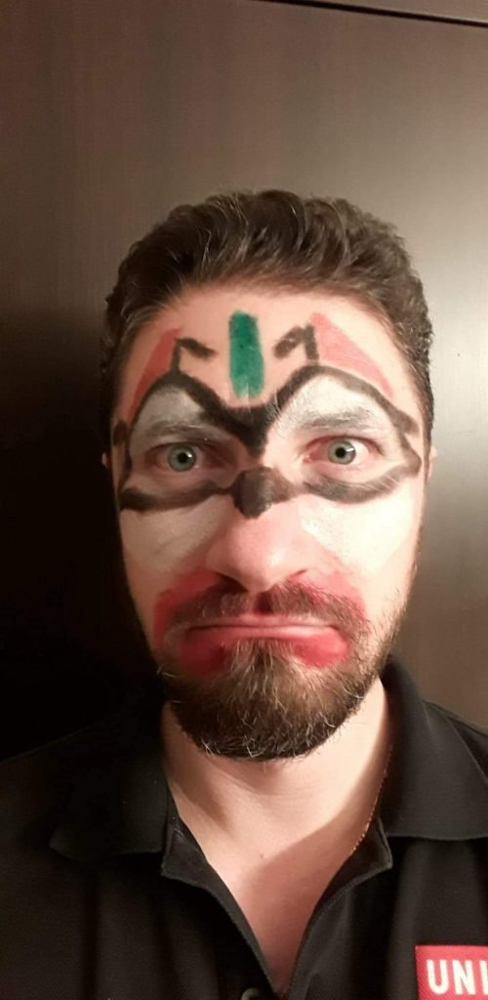
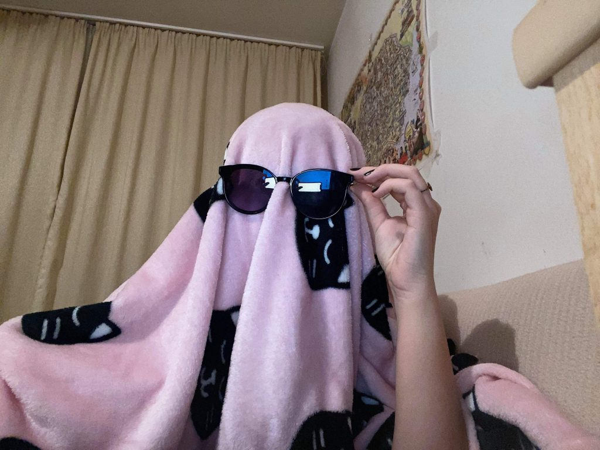
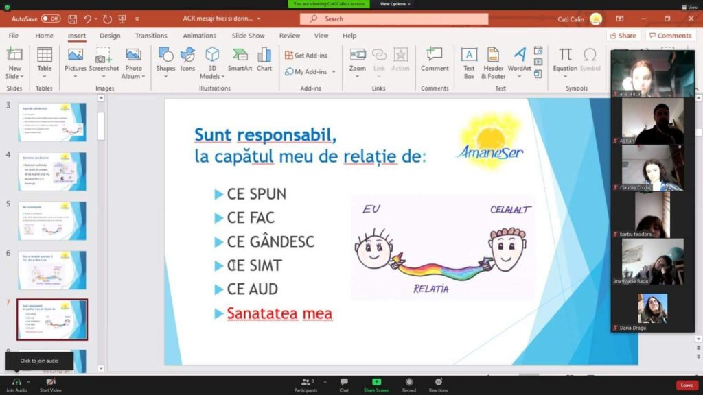
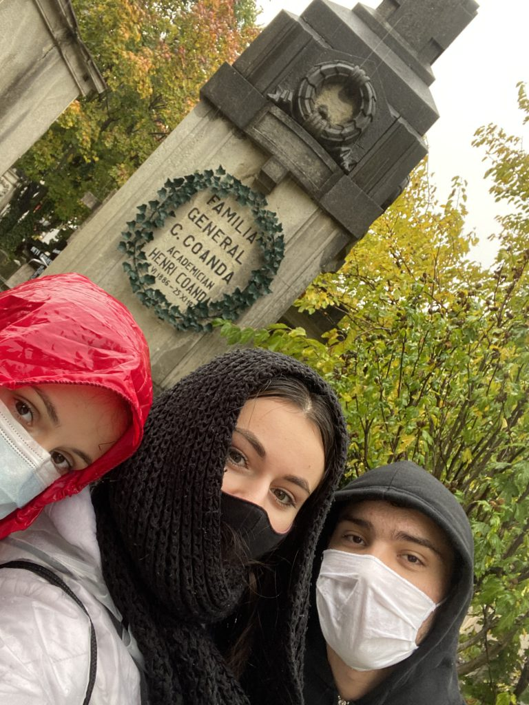
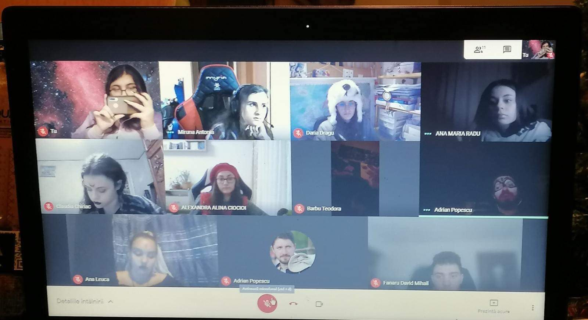

„Înfricoșător de frumos"
Sunt aspirantă la cercetași de mai puțin de o luna și deși a trecut puțin timp, am participat la primele mele evenimente, printre care și primul meu hike. Situația actuală nu ne-a permis să facem un hike în totalitate fizic, dar chiar și-așa lucrurile au decurs minunat.
Hike-ul a început vineri 30 octombrie, seara, cu un eveniment pe Minecraft și o întâlnire pe zoom. Ne-am costumat tematic sărbătorii de Halloween și-am plecat la o vânătoare de comori, găsind valori morale și perspective noi, de asemenea am notat ce iubim să facem, câteva amintiri din acest an și pentru ce suntem recunoscători. După vânătoare, liderul nostru, Adi, ne-a oferit un Ted Talk despre cum ar trebui să trăim mai mult clipa, ignorând presiunile societății.


În a doua zi de hike, dis-de-dimineață, doamna psiholog, mama unei colege temerare, ne-a întâmpinat cu o discuție deschisă despre gestionarea relațiilor cu noi înșine, dar și cu cei din jurul nostru. Ea ne-a dat exemple de moduri cum am putea combate energiile negative, eliminarea toxicului din noi și din relațiile din jur prin metoda ESPERE. Ne-a ajutat să învățăm cum să ne creștem imunitatea, păstrându-ne o stare bună. Am făcut exerciții pe baza acestora și asupra mea, dar sigur și asupra colegiilor mei au avut un efectiv foarte bun, iar activitatea a fost bine primită în contextul actual.

În continuarea acestei zile de 31 octombrie, am mers în cimitirul Bellu, unde am format 2 echipe și am plecat într-o altă aventură căutând locul de veci ale unor personalități precum Mihai Eminescu sau Henri Coandă, dar și statui cu îngerii și diferite elemente specifice.Totul a fost contra timp, iar la sfârșit echipele au trebuit să prezinte fiecare numărul de personalități găsite.

La sfârșitul hike-ului a avut loc o activitate de feedback, activitate la care eu din păcate nu am putut participa, dar m-am revanșat acum.
În final vreau să mulțumesc colegilor mei, pentru buna organizare și primirea în patrulă, liderului meu pentru susținerea acordată și învățăturile primite, doamnei psiholog și mie pentru că am avut curaj să vin la cercetași și să rămân.
Ana Leucă, aspirant la explo;)
